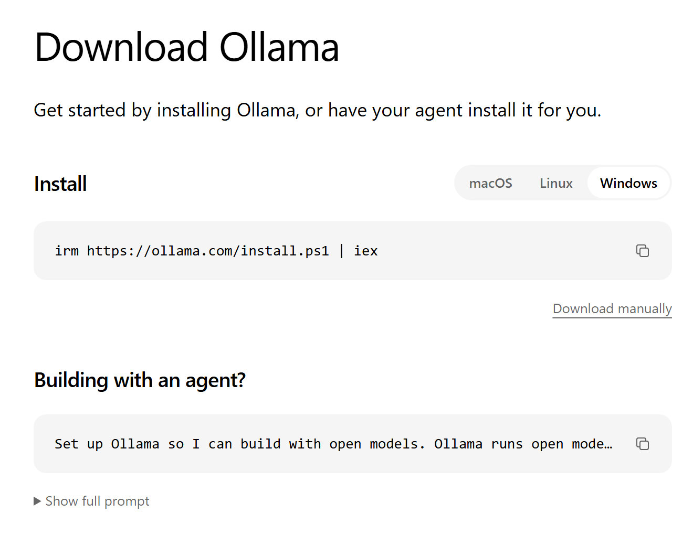
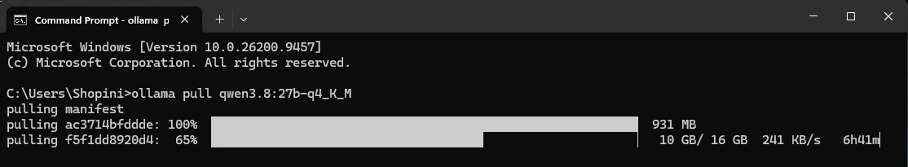
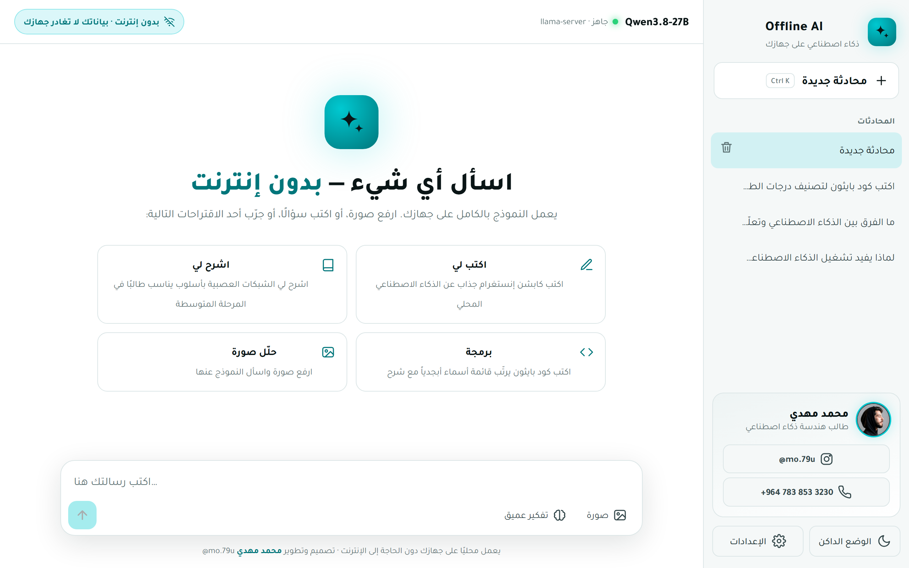
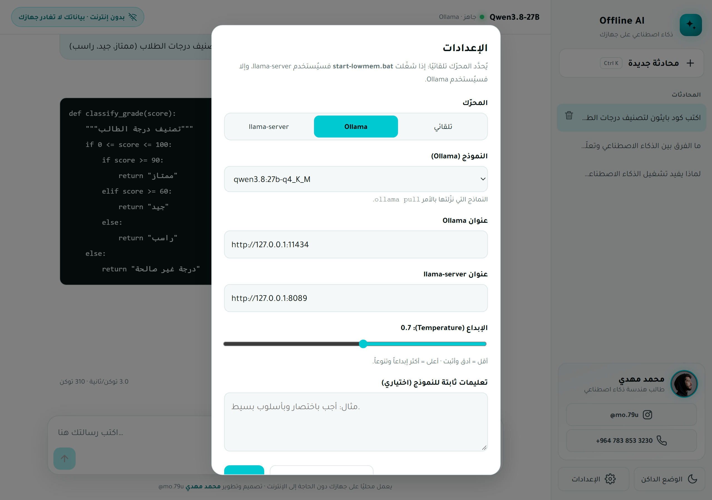

يتيح لك Offline AI التحدث مع نموذج ذكاء اصطناعي (مثل ChatGPT) يعمل على جهازك مباشرةً. وتختار بنفسك النموذج الذي يناسب جهازك، من نموذج خفيف يعمل على أبسط الحواسيب إلى نموذج قوي للأجهزة المتقدمة. وبعد تنزيله مرة واحدة يعمل دون إنترنت، ولا تغادر محادثاتك جهازك أبدًا.
📋 المتطلبات
العنصر
الحد المطلوب
نظام التشغيل
Windows 10 أو Windows 11
الذاكرة (RAM)
من 4 GB إلى 32 GB حسب النموذج الذي تختاره (صفحة 5)
بطاقة الرسوميات
غير مطلوبة للنماذج الصغيرة، ومستحسنة (NVIDIA) للنماذج الكبيرة
المساحة الفارغة
من 2 GB إلى 25 GB حسب النموذج
الإنترنت
مرة واحدة فقط لتنزيل البرنامج والنموذج
💡
كيف أعرف حجم الذاكرة في جهازي؟ اضغط Ctrl + Shift + Esc معًا لفتح Task Manager، ثم انتقل إلى تبويب Performance واختر Memory؛ الرقم الكبير في الأعلى هو حجم الذاكرة.
يمكنك نسخ أي أمر في هذا الدليل مباشرةً: حدّده بالفأرة داخل المربع، ثم اضغط Ctrl + C للنسخ، وCtrl + V للصق. ولفتح أي رابط في تبويب جديد دون إغلاق هذا الدليل، اضغط Ctrl أثناء النقر على الرابط.
دليل التشغيل · محمد مهدي @mo.79u2
Offline AIتعرّف على النماذج
★ تعرّف على النماذج
نماذج Qwen: العقل الذي يعمل على جهازك
جميع النماذج في هذا الدليل من عائلة Qwen التي يطوّرها فريق Qwen التابع لشركة Alibaba Cloud (مجموعة علي بابا)، وهي نماذج مفتوحة المصدر تتراوح أحجامها بين نموذج صغير يعمل على أبسط الحواسيب، ونماذج كبيرة تقترب من أداء الخدمات السحابية. وإلى جانبها يدعم المشروع نماذج من Google وOpenAI (صفحة 5).
من 0.8 إلى 35 مليار
معامل (Parameters)
المعاملات هي القيم التي تعلّمها النموذج أثناء التدريب، وكلما زاد عددها زادت قدرته على الفهم والاستنتاج.
256K
طول السياق
يقرأ نحو 262 ألف رمز دفعةً واحدة (ما يعادل كتابًا كاملًا). وفي هذا المشروع نستخدم 8 آلاف رمز لتوفير الذاكرة.
نص + صور
أنواع المدخلات
تفهم جميع النماذج في الدليل النصوص والصور معًا: صف له صورة، أو اسأله عن مستند أو جدول مصوَّر.
تفكير عميق
وضع الاستنتاج
تستطيع «التفكير» خطوة بخطوة قبل الإجابة عن الأسئلة الصعبة، ويمكنك تشغيل هذا الوضع أو إيقافه.
201 لغة ولهجة
دعم اللغات
تدعم نماذج Qwen3.5 أكثر من مئتي لغة ولهجة، ومنها العربية.
مفتوحة المصدر
الترخيص
يُنشر Qwen3.8-27B بترخيص Apache 2.0 الذي يسمح بالاستخدام المجاني، حتى في المشاريع التجارية.
🏆 الأقوى في هذا الدليل: Qwen3.8-27B
نموذج «كثيف» (Dense) يضم 27.3 مليار معامل في 64 طبقة، ويجمع بين تقنيتَي Gated DeltaNet و Gated Attention. نتائجه في اختبارات معروفة:
LiveCodeBench v6البرمجة90.3
OmniDocBench 1.5فهم المستندات91.1
GPQA Diamondأسئلة علمية متقدمة89.2
OSWorld-Verifiedتنفيذ مهام على الحاسوب84.3
النتائج منشورة من فريق Qwen على صفحة النموذج الرسمية في Hugging Face، وتخص النسخة الكاملة غير المضغوطة.
💾
لماذا تعمل هذه النماذج على جهاز شخصي؟ لأن الأوامر في هذا الدليل تنزّل نسخًا مضغوطة (Q4) تُخزَّن فيها المعاملات بدقة 4 بت تقريبًا بدلًا من 16 بت؛ فينخفض حجم Qwen3.8-27B مثلًا من نحو 56 GB إلى نحو 17 GB، مع انخفاض طفيف في الدقة.
دليل التشغيل · محمد مهدي @mo.79u3
Offline AIالخطوة 1 من 5
1الخطوة الأولى
تثبيت برنامج Ollama
Ollama هو البرنامج الذي يشغّل نماذج الذكاء الاصطناعي على جهازك، وهو مجاني ورسمي.
اضغط على Download manually (المحدد باللون الأحمر 👇) لتنزيل ملف التثبيت OllamaSetup.exe.

صفحة التنزيل الرسمية لبرنامج Ollama
افتح الملف الذي نزّلته بالنقر عليه نقرًا مزدوجًا، ثم اضغط Install وانتظر حتى يكتمل التثبيت.
شكل توضيحي
🦙 Setup - Ollama — ✕
Welcome to Ollama Click Install to continue.
InstallCancel
✅
تمّ بنجاح! إذا ظهرت أيقونة Ollama 🦙 بجوار الساعة أسفل يمين الشاشة، فهذا يعني أن البرنامج يعمل.
دليل التشغيل · محمد مهدي @mo.79u4
Offline AIالخطوة 2 من 5
2الخطوة الثانية (أ)
اختر النموذج المناسب لجهازك
لا يحتاج كل جهاز إلى النموذج الأكبر. ابحث في الجدول عن حجم الذاكرة (RAM) في جهازك، واختر نموذجًا يناسبه. الجدول مرتّب من الأخف إلى الأثقل؛ فكلما نزلت كانت الإجابات أدق، لكن النموذج يحتاج إلى ذاكرة أكبر ويكون أبطأ.
النموذج
الشركة
الحجم
الذاكرة (RAM)
الصور
مناسب لـ
Qwen3.5-0.8B
Alibaba
1.3 GB
4 GB
✓
التجربة فقط (سريع، لكنه قد يخطئ في المعلومات)
Qwen3.5-2B
Alibaba
3 GB
8 GB
✓
الأسئلة البسيطة (دقة محدودة)
Qwen3.5-4B
Alibaba
4 GB
8 GB
✓
الحواسيب العادية
Gemma 4 E2B
Google
4.6 GB
8 GB
✓
الأجهزة الخفيفة
Gemma 4 E4B
Google
6.6 GB
12 GB
✓
الحواسيب العادية
Qwen3.5-9B ⭐
Alibaba
7 GB
16 GB
✓
معظم الاستخدامات بجودة عالية
Gemma 4 12B
Google
8 GB
16 GB
✓
توازن ممتاز بين السرعة والدقة
gpt-oss-20B
OpenAI
14 GB
16 GB
✗
التفكير والبرمجة
Qwen3.8-27B
Alibaba
17 GB
32 GB
✓
أعلى دقة في هذا الدليل
Gemma 4 26B
Google
18 GB
32 GB
✓
سريع رغم حجمه (MoE)
Gemma 4 31B
Google
20 GB
32 GB
✓
أعلى دقة من Google
Qwen3.6-35B-A3B
Alibaba
24 GB
32 GB + Page File
✓
سريع رغم حجمه (MoE)
⭐ الخيار المقترح لأغلب الأجهزة الحديثة. نماذج Qwen من Alibaba Cloud، ونماذج Gemma من Google DeepMind، وgpt-oss من OpenAI. الأحجام حسب مكتبة Ollama.
ذاكرة جهازك 8 GBاختر Qwen3.5-4B
ذاكرة جهازك 16 GBاختر Qwen3.5-9B ⭐
ذاكرة جهازك 32 GB أو أكثراختر Qwen3.8-27B
🧠
ما معنى MoE؟ نموذج لا يعمل من معاملاته في كل إجابة إلا جزء صغير (نحو 3–4 مليارات)، لذا يكون أسرع من حجمه، لكنه يحتاج إلى ذاكرة كافية لتحميله كاملًا. gpt-oss-20B لا يفهم الصور، وستنبّهك الواجهة إن أرفقت صورة أثناء استخدامه.
ℹ️
ماذا عن Anthropic (Claude)؟ لا تتوفر حاليًا نماذج مفتوحة منها يمكن تشغيلها على الجهاز؛ إذ يعمل Claude عبر الإنترنت فقط.
دليل التشغيل · محمد مهدي @mo.79u5
Offline AIالخطوة 2 من 5
2الخطوة الثانية (ب)
نزّل النموذج الذي اخترته
اضغط زر Windows ⊞ في لوحة المفاتيح، واكتب cmd
افتح Command Prompt
انسخ أمر النموذج الذي اخترته من القائمة أدناه، والصقه فيه، ثم اضغط Enter
شكل توضيحي
🔍 cmd
C:\Command Prompt App
Qwen3.5-0.8B
ollama pull qwen3.5:0.8b
Qwen3.5-2B
ollama pull qwen3.5:2b
Qwen3.5-4B
ollama pull qwen3.5:4b
Gemma 4 E2B
ollama pull gemma4:e2b-it-q4_K_M
Gemma 4 E4B
ollama pull gemma4:e4b-it-q4_K_M
Qwen3.5-9B ⭐
ollama pull qwen3.5:9b
Gemma 4 12B
ollama pull gemma4:12b-it-q4_K_M
gpt-oss-20B
ollama pull gpt-oss:20b
Qwen3.8-27B
ollama pull qwen3.8:27b-q4_K_M
Gemma 4 26B
ollama pull gemma4:26b-a4b-it-q4_K_M
Gemma 4 31B
ollama pull gemma4:31b-it-q4_K_M
Qwen3.6-35B-A3B
ollama pull qwen3.6:35b-a3b-q4_K_M
📋 حدّد سطر الأمر وانسخه بـ Ctrl+C، ثم الصقه في Command Prompt بالنقر بزر الفأرة الأيمن أو بـ Ctrl+V.

سيظهر شريط تنزيل كهذا؛ أبقِ النافذة مفتوحة حتى تظهر كلمة success في النهاية.
⚠️ إذا توقف التنزيل بسبب انقطاع الإنترنت، فالصق الأمر نفسه مرة أخرى، وسيُكمل من حيث توقف.
دليل التشغيل · محمد مهدي @mo.79u6
Offline AIالخطوة 3 من 5
3الخطوة الثالثة
تنزيل الواجهة من GitHub
هذه هي الواجهة التي تتحدث من خلالها مع النموذج، وهي تشبه ChatGPT لكنها تعمل على جهازك.
افتح صفحة المشروع على GitHub.
اضغط الزر الأخضر Code، ثم اختر Download ZIP.
شكل توضيحي
📁 offline-ai<> Code ▾
Clone · HTTPS
https://github.com/…/offline-ai.git
📦 Download ZIP
افتح مجلد Downloads، وانقر بزر الفأرة الأيمن على الملف المضغوط، واختر Extract All ثم Extract.
شكل توضيحي
Open
🗂️ Extract All…
Share
Copy as path
💡
سيظهر مجلد جديد باسم offline-ai-main. انقله إلى أي مكان تريده (سطح المكتب مثلًا)؛ فهذا هو مجلد المشروع.
دليل التشغيل · محمد مهدي @mo.79u7
Offline AIالخطوة 4 من 5
4الخطوة الرابعة
التشغيل بنقرة واحدة
افتح مجلد المشروع، وانقر نقرًا مزدوجًا على ملف start.bat
قد يظهر لك تحذير أزرق من Windows بعنوان Windows protected your PC. يظهر هذا التحذير مع أي ملف جديد منزَّل من الإنترنت لا يعرفه Windows، ولا يعني أن الملف ضار. ولا يحتوي التحذير في البداية على زر تشغيل، لذا اتبع الخطوتين:
أاضغط على العبارة الصغيرة More info أسفل النص.
بسيظهر زر جديد باسم Run anyway (أي: «شغّل على أي حال»)؛ اضغط عليه.
شكل توضيحي
أقبل: اضغط More info
Windows protected your PC
Microsoft Defender SmartScreen prevented an unrecognized app from starting.
More info
Don't run
←
ببعد: اضغط Run anyway
Windows protected your PC
App: start.bat Publisher: Unknown publisher
Run anywayDon't run
ستُفتح نافذة سوداء صغيرة — لا تغلقها ما دمت تستخدم البرنامج.
سيفتح المتصفح الواجهة تلقائيًا 🎉

الواجهة عند فتحها أول مرة · النقطة الخضراء في الأعلى تعني أن النموذج جاهز
⚠️
إذا ظهرت رسالة خطأ تتعلق بالذاكرة (تحتوي على memory أو allocate)، فأغلق كل شيء وشغّل start-lowmem.bat بدلًا من start.bat؛ فهو يشغّل النموذج نفسه باستهلاك أقل للذاكرة.
2صورة: ارفع صورة واسأل عنها (أو اسحبها إلى الصفحة)
6المحادثات: جميعها محفوظة، ويمكنك العودة إليها متى شئت
3تفكير عميق: أبطأ، لكنه أدق في الأسئلة الصعبة
7الوضع الفاتح والداكن
4إرسال: ويتحوّل إلى زر إيقاف أثناء الكتابة
8الإعدادات: لتغيير النموذج والتعليمات
🔄 التبديل بين النماذج
اضغط زر الإعدادات (رقم 8).
من قائمة النموذج اختر أي نموذج نزّلته (المحددة بالأحمر).
اضغط حفظ، وستستخدم المحادثات التالية النموذج الجديد.

⏱️
السرعة: تختلف حسب النموذج؛ فالنماذج الصغيرة أسرع بكثير. وعلى حاسوب محمول مزوّد ببطاقة رسوميات بذاكرة 8 GB، يكتب Qwen3.8-27B نحو 3 كلمات في الثانية، وهذا طبيعي لنموذج بهذه القوة.
دليل التشغيل · محمد مهدي @mo.79u9
Offline AIحل المشكلات
🛠️ عند حدوث مشكلة
حل المشكلات الشائعة
المشكلة
الحل
توقف التنزيل وظهرت رسالة خطأ
الصق أمر التنزيل نفسه مرة أخرى، وسيُكمل من حيث توقف.
رسالة 'ollama' is not recognized
أغلق Command Prompt وافتحه من جديد. وإن لم ينجح ذلك، فأعد تشغيل الجهاز.
خطأ في الذاكرة (يحتوي على memory أو allocate)
اختر نموذجًا أصغر من جدول صفحة 5. وإن أردت Qwen3.8-27B تحديدًا، فشغّل start-lowmem.bat بدلًا من start.bat.
ظهور رسالة «Ollama غير مشغَّل»
شغّل start.bat مرة أخرى (فهو يشغّل Ollama تلقائيًا)، أو افتح Ollama من قائمة «ابدأ».
ظهور رسالة «لا يوجد نموذج»
لم تنزّل أي نموذج بعد؛ انسخ أمر التنزيل من صفحة 6.
ظهور رسالة «النموذج قيد التحميل…»
انتظر من 20 إلى 60 ثانية؛ فالتشغيل الأول يستغرق بعض الوقت.
الإجابة بطيئة
هذا طبيعي. أغلق البرامج الثقيلة (كالألعاب أو المتصفح بعلامات تبويب كثيرة)، وأوقف «التفكير العميق».
جهازي أضعف من المطلوب
نزّل نموذجًا أصغر من جدول صفحة 5، ثم اختره من ⚙️ «الإعدادات».
إذا ظهر خطأ في ذاكرة بطاقة الرسوميات حتى مع start-lowmem.bat، فشغّل الأمر التالي لتخفيف الحمل عنها:
start-lowmem.bat -GpuLayers 10
📋 افتح مجلد المشروع، واكتب cmd في شريط العنوان أعلى النافذة واضغط Enter، ثم الصق الأمر
❓ أسئلة شائعة
هل يحتاج البرنامج إلى الإنترنت بعد التثبيت؟ لا. بعد تنزيل كل شيء، يمكنك قطع الاتصال بالإنترنت وسيعمل بشكل طبيعي.
هل يوجد حد للرسائل أو اشتراك؟ لا. البرنامج مجاني بالكامل ودون حدود، لكن يُفضَّل بدء محادثة جديدة إذا طالت المحادثة كثيرًا.
هل تُرسَل محادثاتي إلى أي جهة؟ لا. النموذج والمحادثات جميعها على جهازك فقط.
كيف أغلق البرنامج؟ أغلق المتصفح والنافذة السوداء. وفي المرة القادمة، شغّل start.bat فقط، دون الحاجة إلى تنزيل أي شيء من جديد.
دليل التشغيل · محمد مهدي @mo.79u10
تهانينا 🎉 أصبح لديك ذكاء اصطناعي خاص بك يعمل دون إنترنت.
إذا استفدت من هذا الدليل، فتابعني على Instagram؛ أشارك فيه أدوات الذكاء الاصطناعي ونصائحه بأسلوب مبسّط.